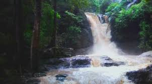

BRIMORE

Brimore in Kerala is the base station of the famous peak, Agasthyarkoodam in the Agasthya hills. With rolling valleys, gurgling streams and waterfalls, rich flora and fauna and enticing Shola forests, Brimore welcomes you for a treasured trek.Since 1880, Brimore Estate has been noted for its sprawling 900 acres of tea, rubber, coffee and spices, situated in the north eastern part of Thiruvananthapuram district.
Location